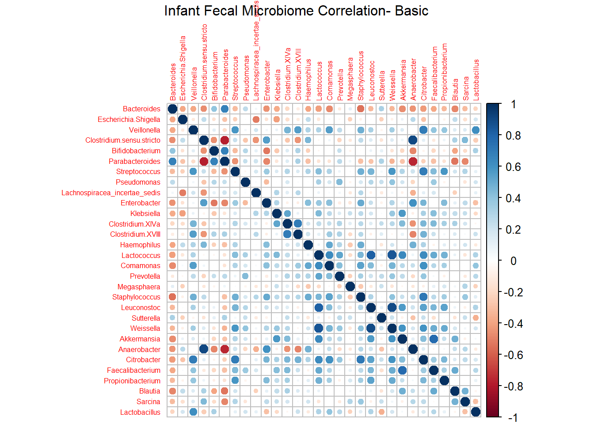
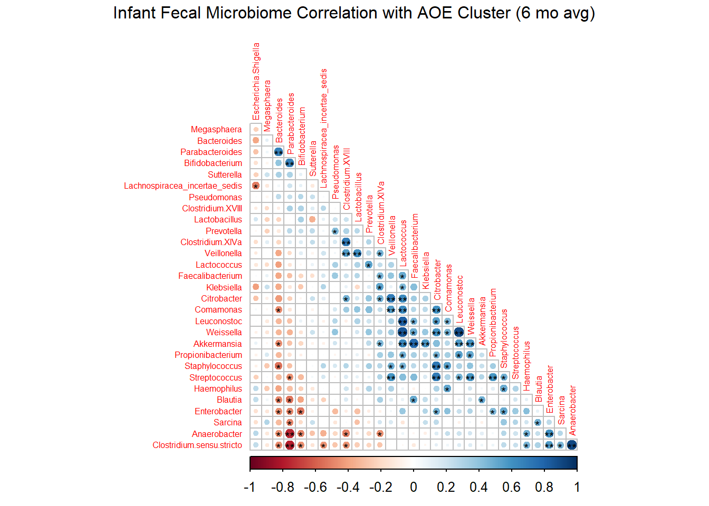

library(dplyr)
library(tidyverse)
library(readr)
library(Hmisc)
library(corrplot)Infant Fecal Microbiome Correlations
Herein lies BCB 520 assignment 3, which contains an infant fecal microbiome correlation plot.
What does that mean?
First, a little bit about the data: I have a data table that contains participants (first column, 21 rows of participant IDs), and bacterial genera read counts averaged over 9 timepoints per participant. There were initially over 1000 bacterial genera columns of data, but I have trimmed it down to the top 30.
Before I go on, we will load libraries and take a peek at the data table.
Libraries
Import and look at the .rds file
Load the data set.
IF_top30 <- readRDS("C:/Users/sharo/Desktop/BCB 520/Assignments/IF_top30.rds")Below is subset of the data. You can see the participant ID as the first column (A003, A005, etc) and bacterial genera relative abundance (expressed as percentage) in the following columns. Here we see the first 4 columns of bacteria genera, but for the correlation plot below, we use all 30.
IF_top30[,1:4] Bacteroides Escherichia.Shigella Veillonella Clostridium.sensu.stricto
A003 0.23493134 24.673454640 6.6693137 8.296923750
A005 4.02761085 20.209190530 11.1726579 6.019777140
A007 0.19334102 4.074305556 24.9752758 0.659688178
A009 0.02770472 57.396699533 0.1416980 11.107959633
A011 9.26831811 4.852269800 18.2515791 0.052937900
A013 0.25171539 14.938690870 25.1883604 2.902620620
A015 40.65170057 13.094583838 2.0534671 0.152828987
A017 29.87910938 4.391378011 5.1910630 0.307567033
A019 44.56634097 7.588655580 5.0236797 0.106448550
A021 40.75502674 1.106360367 4.9050189 3.952965600
A025 34.51478583 1.733203256 3.5605401 0.000000000
A027 1.02156002 6.573109900 28.7444037 24.638294267
A029 44.22892401 23.098446878 2.1665187 0.090762833
A031 0.05744295 62.947694350 3.3153721 26.952580000
A033 38.51864961 12.478839610 6.6155465 7.548103950
A035 34.68255444 6.776953956 1.5039755 32.013236233
A037 14.03453994 18.774367287 10.5120452 24.897731312
A039 0.11653624 47.718616850 17.9059235 2.086916700
A041 21.72538480 9.548148850 0.5365920 10.075460910
A043 8.18592391 0.006921912 4.7780929 17.086879375
A045 64.73004397 8.060339722 0.2979979 0.002079567Create correlation matrix
I am using a function “rcorr” to easily create a correlation matrix for my data using spearman rank correlations. This is very similar to running a mini regression for each pair of columns in my data table above, except the spearman correlation is for non-parametric data like bacterial relative abundance.
What rcorr does is take the column Bacteriodes above and run a correlation with itself, with a resulting correlation coefficient =1. Then it takes Bacteriodes and runs a correlation with Escheria.Shigella, and so on until Bacteriodes has been compared to every other columnn. Then it keeps going and compares “everything to everything”. See the first plot below.
IF_IF_rcorr <- rcorr(as.matrix(IF_top30), type=c("spearman"))Correlation plot
Below is a raw plot. Note the dark diagonal line that corresponds to correlation 1. This represents something compared to itself (like Bacteriodes to Bacteriodes mentioned above).
Each circle represents the direction and magnitude of the correlation as described by the legend on the left. Strong correlations are indicated with a large, dark circle. Blue means positive correlation, red means negative correlation.
But wait- I have a better one below. I felt that this plot may be useful to understand what rcorr is doing before I trim it down to what is actually interesting (to me).
corrplot(IF_IF_rcorr$r, pch.col='black', pch.cex=0.7,
method=c("circle"), tl.cex=0.5)
mtext("Infant Fecal Microbiome Correlation- Basic", line =3)
Now in order to improve the usefulness of the graphic, I have done several things:
Remove the upper triangle. You may notice that the upper and lower triangles are mirror images, so this is just redundant data.
Remove the 1-1 correlations (the dark blue diaganol). The fact that something is 1-1 correlated with itself is not useful or interesting.
Flag significant p values, because it would be nice to know which correlations are actually statistically significant. One star represents a “trend” (p < 0.05) and two stars indicate a significant correlation (P < 0.01). [Don’t people usually say p < 0.05 is significant? Yes, but this is exploratory data, and we just wanted a rough way to correct for false discovery rate. Don’t get me started on p value adjustments for correlation matrices. It’s a living nightmare.]
I have also clustered the correlations with similar direction and magnitude using “Angular order of the Eigenvectors” (AOE). Basically that groups dots with similar colors and sizes together. There are other clustering methods, but I don’t understand them well enough to know which is the best.
Conclusion
This is exploratory, hypothesis-generating data. There was no treatment or intervention that should be considered. The type of information we can gather is like this: Bacteriodes appears to be negatively correlated with many other genera. Akkermansia appears postively correlated with several other genera. And so on.
corrplot(IF_IF_rcorr$r, p.mat=IF_IF_rcorr$P, sig.level=c(0.01,0.05),
insig='label_sig', pch.col='black', pch.cex=0.7,
method=c("circle"), tl.cex=0.5, order="AOE", type="lower", diag = F)
mtext("Infant Fecal Microbiome Correlation with AOE Cluster (6 mo avg)", line =3)